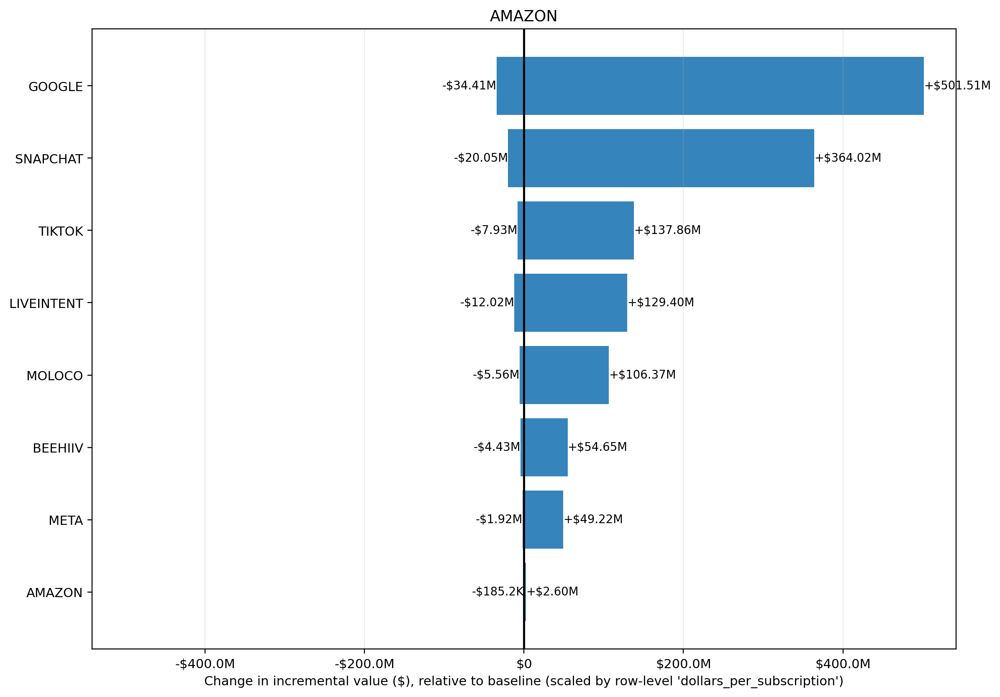

Input CSV: tornado_demo_32run.csv
Channels altered: AMAZON
Value Scaling: scaled by row-level 'dollars_per_subscription'
Selection objective: total_new_value
Best prior setup: KPI_TYPE: NA(mu=NA, sigma=NA) | KPI_TYPE_EFFECTIVE: NA(mu=NA, sigma=NA) | PRIOR_DESIGN_MODE: NA(mu=NA, sigma=NA) | PRIOR_GRID_TYPE: NA(mu=NA, sigma=NA) | REVENUE_PER_KPI: NA(mu=NA, sigma=NA) | ROI_PRIOR_OVERRIDES: NA(mu=NA, sigma=NA) | RUN_MODE: NA(mu=NA, sigma=NA) | STRUCTURAL_OVERRIDES: NA(mu=NA, sigma=NA) | SWEEP_TYPE: NA(mu=NA, sigma=NA) | TARGET_CHANNEL: NA(mu=NA, sigma=NA) | TWO_LAYER_ENABLED: NA(mu=NA, sigma=NA)
| prior_setup | total_new_value | delta_value_vs_baseline | delta_roi |
|---|---|---|---|
| KPI_TYPE: NA(mu=NA, sigma=NA) | KPI_TYPE_EFFECTIVE: NA(mu=NA, sigma=NA) | PRIOR_DESIGN_MODE: NA(mu=NA, sigma=NA) | PRIOR_GRID_TYPE: NA(mu=NA, sigma=NA) | REVENUE_PER_KPI: NA(mu=NA, sigma=NA) | ROI_PRIOR_OVERRIDES: NA(mu=NA, sigma=NA) | RUN_MODE: NA(mu=NA, sigma=NA) | STRUCTURAL_OVERRIDES: NA(mu=NA, sigma=NA) | SWEEP_TYPE: NA(mu=NA, sigma=NA) | TARGET_CHANNEL: NA(mu=NA, sigma=NA) | TWO_LAYER_ENABLED: NA(mu=NA, sigma=NA) | $1.72B | +$923.38M | 4804.77% |
| KPI_TYPE: NA(mu=NA, sigma=NA) | KPI_TYPE_EFFECTIVE: NA(mu=NA, sigma=NA) | PRIOR_DESIGN_MODE: NA(mu=NA, sigma=NA) | PRIOR_GRID_TYPE: NA(mu=NA, sigma=NA) | REVENUE_PER_KPI: NA(mu=NA, sigma=NA) | ROI_PRIOR_OVERRIDES: NA(mu=NA, sigma=NA) | RUN_MODE: NA(mu=NA, sigma=NA) | STRUCTURAL_OVERRIDES: NA(mu=NA, sigma=NA) | SWEEP_TYPE: NA(mu=NA, sigma=NA) | TARGET_CHANNEL: NA(mu=NA, sigma=NA) | TWO_LAYER_ENABLED: NA(mu=NA, sigma=NA) | $1.35B | +$561.80M | 2923.32% |
| KPI_TYPE: NA(mu=NA, sigma=NA) | KPI_TYPE_EFFECTIVE: NA(mu=NA, sigma=NA) | PRIOR_DESIGN_MODE: NA(mu=NA, sigma=NA) | PRIOR_GRID_TYPE: NA(mu=NA, sigma=NA) | REVENUE_PER_KPI: NA(mu=NA, sigma=NA) | ROI_PRIOR_OVERRIDES: NA(mu=NA, sigma=NA) | RUN_MODE: NA(mu=NA, sigma=NA) | STRUCTURAL_OVERRIDES: NA(mu=NA, sigma=NA) | SWEEP_TYPE: NA(mu=NA, sigma=NA) | TARGET_CHANNEL: NA(mu=NA, sigma=NA) | TWO_LAYER_ENABLED: NA(mu=NA, sigma=NA) | $1.32B | +$578.16M | 3008.46% |
| KPI_TYPE: NA(mu=NA, sigma=NA) | KPI_TYPE_EFFECTIVE: NA(mu=NA, sigma=NA) | PRIOR_DESIGN_MODE: NA(mu=NA, sigma=NA) | PRIOR_GRID_TYPE: NA(mu=NA, sigma=NA) | REVENUE_PER_KPI: NA(mu=NA, sigma=NA) | ROI_PRIOR_OVERRIDES: NA(mu=NA, sigma=NA) | RUN_MODE: NA(mu=NA, sigma=NA) | STRUCTURAL_OVERRIDES: NA(mu=NA, sigma=NA) | SWEEP_TYPE: NA(mu=NA, sigma=NA) | TARGET_CHANNEL: NA(mu=NA, sigma=NA) | TWO_LAYER_ENABLED: NA(mu=NA, sigma=NA) | $1.16B | +$416.76M | 2168.61% |
| KPI_TYPE: NA(mu=NA, sigma=NA) | KPI_TYPE_EFFECTIVE: NA(mu=NA, sigma=NA) | PRIOR_DESIGN_MODE: NA(mu=NA, sigma=NA) | PRIOR_GRID_TYPE: NA(mu=NA, sigma=NA) | REVENUE_PER_KPI: NA(mu=NA, sigma=NA) | ROI_PRIOR_OVERRIDES: NA(mu=NA, sigma=NA) | RUN_MODE: NA(mu=NA, sigma=NA) | STRUCTURAL_OVERRIDES: NA(mu=NA, sigma=NA) | SWEEP_TYPE: NA(mu=NA, sigma=NA) | TARGET_CHANNEL: NA(mu=NA, sigma=NA) | TWO_LAYER_ENABLED: NA(mu=NA, sigma=NA) | $901.40M | +$198.84M | 1034.68% |
| channel | delta_value | delta_roi |
|---|---|---|
| +$957.84M | 93.01% | |
| META | +$4.55M | 5.41% |
| BEEHIIV | +$2.06M | 6.28% |
| MOLOCO | +$1.10M | 1.30% |
| AMAZON | -$146.4K | -9.30% |
| TIKTOK | -$8.12M | -4.63% |
| LIVEINTENT | -$12.85M | -16.11% |
| SNAPCHAT | -$21.05M | -4.85% |
Largest sensitivity ranges are in GOOGLE (-$34.41M to $501.51M); SNAPCHAT (-$20.05M to $364.02M); TIKTOK (-$7.93M to $137.86M). Biggest upside scenario is GOOGLE at $501.51M, while the largest downside scenario is GOOGLE at -$34.41M. Bars crossing zero indicate the channel can either help or hurt depending on prior assumptions; wider bars indicate greater uncertainty and model sensitivity.
